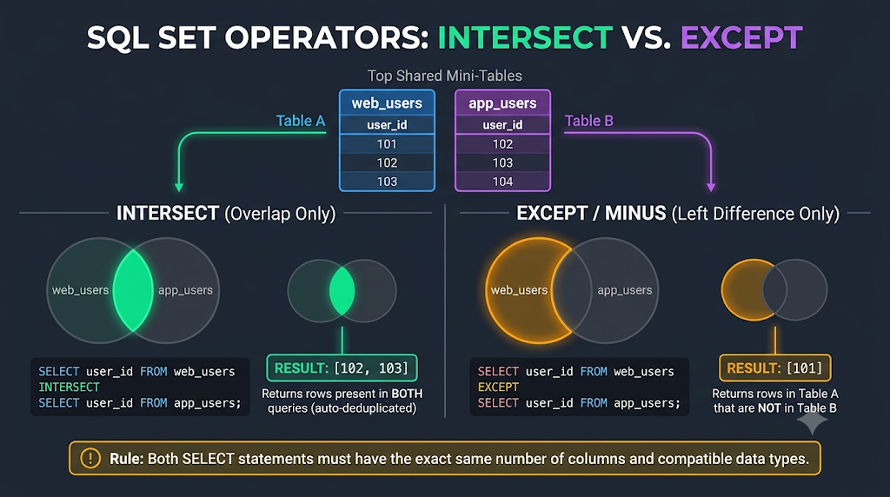
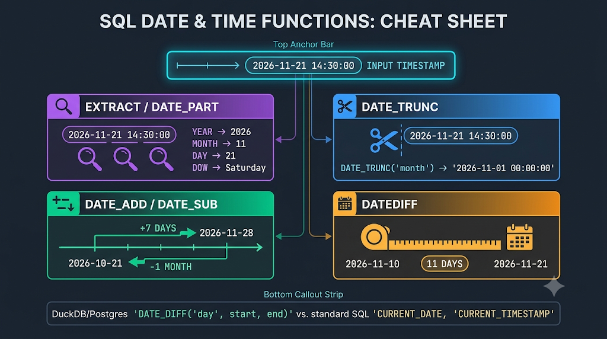

Week 1 · Day 7 · Section 2 capstone
Production SQL Patterns on the Lakehouse
SQL for Data Engineers — closing Week 1 with pipeline-ready patterns
Days 4–6 built query fluency: joins, aggregates, CTEs, windows, recursion. Today maps the rest of the SQL surface data engineers touch daily—command families (DDL/DML/TCL/DCL), set algebra, grain control, semi-structured data, and write paths—using Athena with small inline VALUES samples and tables in your lab database.
How SQL is grouped: DDL · DML · TCL · DCL
Interviewers and runbooks use these labels. On Athena, most analytics is read-only SELECT; pipelines add DDL/DML when materializing tables.
| Family | Purpose | Examples | Typical DE use |
|---|---|---|---|
| DDL | Shape objects | CREATE, ALTER, DROP, TRUNCATE | Glue tables, CTAS staging, drop dev tables |
| DML | Rows in/out | SELECT, INSERT, UPDATE, DELETE, MERGE | Transform (SELECT), load (INSERT), upsert (MERGE on Iceberg) |
| TCL | Transaction boundaries | COMMIT, ROLLBACK | RDS/Aurora ETL; lake tables use atomic commits (Iceberg snapshot) |
| DCL | Permissions | GRANT, REVOKE | IAM, Lake Formation; rarely in student SQL |
DQL is informal shorthand for analytical SELECT—most of Week 1 practice. CTAS is both DDL (new table) and DML (insert via query).
Run each statement in your lab database (e.g. de_<userid>). One query at a time in Athena.
Hands-on: DDL & DML on Athena
Materialize, replace, and append tables you own. Practice writes only on tables you create in your Glue database (de_<userid>).
DDLDrop table — remove object and data (dev reset)
Truncate table — delete all rows, keep columns
Common on warehouse tables and Iceberg. On a plain Hive CTAS table, Athena may not support truncate—use DROP + CTAS instead.
Create table — variant A: columns + LOCATION, then INSERT
Hive CREATE EXTERNAL TABLE (not WITH (format, …)). Then run the INSERT copy block.
Create table — variant B: CTAS
Create a view (saved query definition)
Alter table — add a column (Glue metadata)
Use string or varchar(n) — not bare VARCHAR.
DMLDelete rows (filtered)
Row-level remove. Reliable on Iceberg; on Hive CTAS labs, rehearse syntax and use DROP if the engine rejects delete.
Insert rows from a query
Append new days or backfill partitions. Table must already exist with matching column types.
MERGE pattern (Iceberg — reference for Week 2+)
Upsert when a natural key must stay unique. Requires an Iceberg table; syntax shown for recognition in interviews.
Set operations — stack and compare queries
UNION ALL stacks queries and keeps duplicates (fast append). UNION stacks and dedupes. INTERSECT returns keys in both sets; EXCEPT returns keys in A not in B. Columns must align by position and compatible types.
UNION ALL — stack two batches (duplicate keys stay)
UNION — stack and dedupe keys

INTERSECT vs EXCEPT — match the copy-paste examples below.INTERSECT — users who appear in both batch lists
EXCEPT — users in batch A but not batch B
Grain: fan-out, deduplication, latest row
- Fan-out: joining one parent row to many child rows multiplies lines; always know your row grain before
SUM. - Dedup:
ROW_NUMBER() OVER (PARTITION BY key ORDER BY ts DESC)thenWHERE rn = 1in an outer query—never filter windows in the sameWHEREas raw rows.
Reshape without a spreadsheet
Conditional aggregation (SUM(CASE WHEN …)) builds pivot-style metrics. ROLLUP adds subtotal rows in one query (supported in Athena for reports).
Windows — what lives next to Day 5
NTILE(n) — quartile cohorts for A/B or bucketing users.
FIRST_VALUE / LAST_VALUE — session boundaries.
ROWS BETWEEN — last N physical rows (Day 5 rolling avg).
RANGE BETWEEN — peers with same sort key; calendar series often need date_diff guards instead.
Semi-structured: UNNEST and arrays
Events with arrays (tags, line items) need one row per element. Pattern: CROSS JOIN UNNEST(arr) AS t(item) after casting JSON to ARRAY.
Hands-on: date & time functions
Tiny event tables built with VALUES—same patterns you will use on real fact tables for buckets, SLA gaps (Day 4), and spine queries (Day 6).
| Function | Purpose |
|---|---|
CAST(... AS TIMESTAMP) | Parse string timestamps for analytics |
DATE(ts) / DATE_TRUNC | Day or month buckets |
date_add / date_diff | Shift calendars, measure gaps between days |
year / month / day_of_week | Extract parts for filters and cohorts |
format_datetime | Human-readable labels in exports |

DATE_DIFF('day', start, end), DATE_ADD, DATE_TRUNC, YEAR / MONTH.Monthly buckets
Delivery lag in days
Date spine (7 days) from an anchor
Extract year / month for partitioning logic
String cleanup
Normalize text fields
Parse a token with regex
Write-path recap
DDL/DML snippets live in Hands-on: DDL & DML. Pipeline-heavy MERGE and partition append land in Week 2.
Athena cost habits
Filter on partition columns when tables are partitioned; select only needed columns; use approx_distinct for large cardinality sketches; preview with LIMIT then remove for production SQL.
Hands-on — inline snippets
Paste into Athena. Lab 4 uses your personal database; the rest are self-contained SELECTs. One statement per execution.
-
1Reconcile two ID lists with EXCEPT
-
2Latest row per device (dedup pattern)
-
3Counts by region and status (pivot-style CASE)
-
4DDL mini-cycle — CTAS then query your table
-
5Events by day-of-week (date extract)
Week 1 SQL — how it fits together
Day 4: trustworthy joins and aggregates. Day 5: windows without losing rows. Day 6: recursion and optimization mindset. Day 7: command types, reconciliation, grain, nested data, and writes—the vocabulary you will reuse in dbt, Spark SQL, and every Athena notebook in the course.